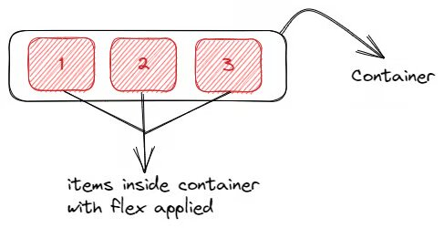
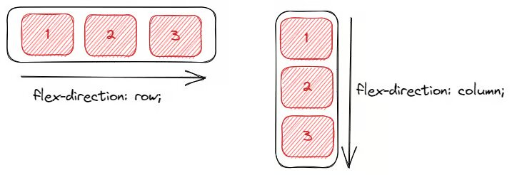
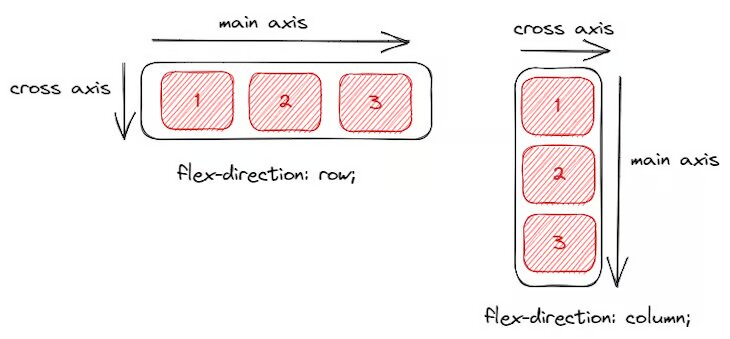
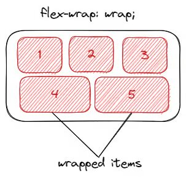
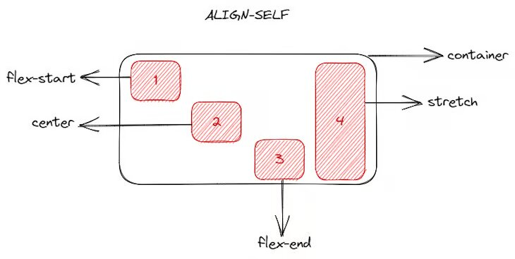
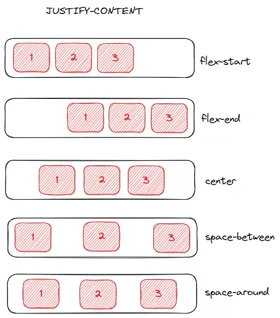

ResponsiveFlex una web donde aprender todas las caracteristicas y usos de Flex
¡Prepárate para embarcarte en una aventura alucinante en el mundo del diseño web! Imagina una web donde te conviertes en un maestro del diseño flexible con CSS Flex. Te llevaré paso a paso para que domines esta poderosa herramienta y transformes cualquier sitio web en una obra de arte dinámica y adaptativa.¡Bienvenido a tu aventura con CSS Flex!
Aprenderás a centrar elementos con una precisión asombrosa, a organizar el contenido de manera eficiente y a crear interfaces impresionantes que se adaptan a cualquier dispositivo, desde móviles hasta pantallas gigantes. Descubrirás cómo manejar contenedores y elementos flexibles para construir diseños modernos y funcionales que cautivarán a tus visitantes.
No solo te enseñaré los conceptos básicos, sino que también explorarás técnicas avanzadas y casos de uso reales que te inspirarán a llevar tus proyectos al siguiente nivel. Con CSS Flex, la flexibilidad y la creatividad van de la mano, y tú estarás en el asiento del conductor, listo para sorprender y deleitar con tus habilidades de diseño web.
¡La aventura de CSS Flex te espera! 🚀 ¿Listo para comenzar esta emocionante travesía en el mundo de CSS Flex?
Gallery
- 
- 
- 
- 
- 
- 
Contenido flex
Conceptos Clave: Main Axis y Cross Axis
En Flexbox, hay dos ejes principales a considerar:
- Main Axis (Eje Principal): Es el eje principal a lo largo del cual se alinean los elementos flexibles. Su dirección depende del valor de la propiedad
flex-direction. - Si
flex-directionesroworow-reverse, el eje principal es horizontal (de izquierda a derecha o de derecha a izquierda). - Si
flex-directionescolumnocolumn-reverse, el eje principal es vertical (de arriba a abajo o de abajo a arriba). - Cross Axis (Eje Cruzado): Es el eje perpendicular al eje principal. La alineación en este eje depende de las propiedades
align-itemsyalign-content. - Si el eje principal es horizontal, el eje cruzado es vertical.
- Si el eje principal es vertical, el eje cruzado es horizontal.
Guía de Flexbox en CSS
Flexbox es una herramienta poderosa y moderna en CSS para diseñar y distribuir elementos dentro de un contenedor de manera eficiente. A continuación, te presentamos una lista de algunos atributos de Flexbox y una descripción de cada uno:
1. display: flex
Convierte un elemento en un contenedor flexible y permite que sus hijos se alineen y distribuyan utilizando el modelo Flexbox.
.flex-container {
display: flex;
} 2. flex-direction
Define la dirección en la que se colocan los elementos flexibles dentro del contenedor.
.flex-container {
flex-direction: row;
} row: De izquierda a derecha (main axis horizontal).row-reverse: De derecha a izquierda (main axis horizontal). NO RECOMENDADO - accesibilidadcolumn: De arriba a abajo (main axis vertical).column-reverse: De abajo a arriba (main axis vertical). NO RECOMENDADO - accesibilidad
3. flex-wrap
Define si los elementos flexibles deben envolverse dentro del contenedor o permanecer en una sola línea.
.flex-container {
flex-wrap: nowrap;
} nowrap: Los elementos se mantienen en una sola línea.wrap: Los elementos se envuelven en líneas adicionales según sea necesario.wrap-reverse: Los elementos se envuelven en líneas adicionales en orden inverso.
4. justify-content
Alinea los elementos flexibles a lo largo del eje principal del contenedor.
.flex-container {
justify-content: flex-start;
} flex-start: Elementos alineados al inicio del main axis.flex-end: Elementos alineados al final del main axis.center: Elementos centrados en el main axis.space-between: Espacio igual entre los elementos en el main axis.space-around: Espacio igual alrededor de cada elemento en el main axis.space-evenly: Espacio uniformemente distribuido entre los elementos en el main axis.
5. align-items
Alinea los elementos flexibles a lo largo del eje transversal del contenedor.
.flex-container {
align-items: stretch;
} stretch: Elementos estirados para llenar el contenedor en el cross axis.flex-start: Elementos alineados al inicio del cross axis.flex-end: Elementos alineados al final del cross axis.center: Elementos centrados en el cross axis.baseline: Elementos alineados a la línea base del contenedor en el cross axis.
6. align-content
Alinea las líneas del contenedor flexible cuando hay espacio extra en el eje transversal.
.flex-container {
align-content: stretch;
} stretch: Las líneas se estiran para llenar el contenedor en el cross axis.flex-start: Las líneas se alinean al inicio del cross axis.flex-end: Las líneas se alinean al final del cross axis.center: Las líneas se centran en el cross axis.space-between: Espacio igual entre las líneas en el cross axis.space-around: Espacio igual alrededor de cada línea en el cross axis.
7. gap
Define el espacio entre los elementos flexibles. Valor en unidades de longitud, por ejemplo, 10px.
.flex-item {
gap: 0;
} 8. flex-grow
Define cuánto debe crecer el elemento en relación con los demás elementos flexibles, 1 (predeterminado, el elemento se contrae) o 0 (el elemento no se contrae).
.flex-item {
flex-grow: 1;
} 9. flex-shrink
Establece cuánto debe encogerse el elemento si es necesario para evitar que el contenedor se desborde. Valor numérico para el encogimiento del elemento
.flex-item {
flex-shrink: 1;
} 10. flex-basis
Determina el tamaño inicial principal del elemento antes de que el espacio disponible sea distribuido.
.flex-item {
flex-basis: 100px;
} 11. flex
Es una propiedad abreviada que combina flex-grow, flex-shrink y flex-basis en una sola declaración.
.flex-item {
flex: 1 1 150px;
} 12. align-self
Permite ajustar la alineación del elemento de manera diferente a los demás elementos dentro del contenedor. Opciones: auto, flex-start, flex-end, center, baseline, stretch
.flex-item {
align-self: flex-end;
} Continuaraa.....
Proximamente, mas contenido con Grid... Esta página esta maquetada usando Flex.